摘要
大规模智能体训练与评测依托大语言模型（LLM）在隔离、有状态的执行环境中检视代码仓库、调用 工具、执行命令，并与任务特定服务交互。这类工作负载以大规模突发方式创建沙箱，功能与隔离需求 高度异构，在长交互过程中保持状态，且从复用度有限的大规模镜像语料中取材。因此，支撑它们 需要的是一个弹性执行平台，而不是单一的沙箱运行时。
本报告介绍 DeepSeek 弹性计算（DSec），一个生产级沙箱平台，它通过统一的 SDK 暴露 FnCall、容器、microVM 与完整虚拟机四类沙箱后端。DSec 在集群范围内协调放置与生命周期管理， 用相互独立版本化的层组合出环境，把内存共享、内存回收与 CPU 调度结合起来以支持高密度执行， 并按需从 Fire-Flyer 文件系统（3FS）——一个集群级分布式文件系统——加载镜像数据。DSec 与 强化学习（RL）框架协同设计：把有状态的 rollout 执行与可抢占的 GPU 训练解耦，让沙箱生命周期 与训练协同，从而在回收空闲资源的同时保留 rollout 状态，并缓解奖励欺骗（reward hacking） 等智能体不当行为。
DSec 的单个生产规模单元覆盖约 160 个节点，每天服务约 300 万个沙箱；在生产中它支撑超过 38 万个并发沙箱，并维持每秒 5,000 次以上的沙箱创建。我们的评测与部署经验表明，这些机制 降低了环境搭建与镜像分发的开销，提升了内存效率，并在高密度超卖下保住了时延敏感任务的性能。
关键数字
- 单个规模单元每天服务约 300 万 个沙箱实例
- 峰值并发约 38 万 个沙箱，创建速率超过 每秒 5,000 个实例
- 单节点稳定运行点：3,200 个容器或 800 个 microVM
- 按需加载相对急切拉取：端到端完成时间 1.71× 提速，累计磁盘写 减少 57%
- 可组合层相对 tar.gz：完成时间 1.76× 提速，磁盘写流量 降低约 5.5 倍，峰值写吞吐 降低 3.4 倍
- virtio-pmem + DAX：峰值主机内存 下降 40.2%；DAMON + 空闲页上报：时间积分内存消耗 下降 21.2%
- CPU QoS：SMT 引发的时延膨胀从 45.2% 压到 17.3%
本文档结构
- 第 1 节给出动机：智能体训练对沙箱平台提出的七条工作负载特性。
- 第 2 节从用户视角介绍 DSec：SDK 入口、四类沙箱后端、会话生命周期与部署规模。
- 第 3 节描述平台架构：IAM、apiserver、放置引擎、watcher 等集群级服务，edge、 aether、chronus 组成的沙箱运行时，以及云突发分流。
- 第 4 节用生产度量刻画工作负载，并给出它导致的三个耦合的平台挑战。
- 第 5 节给出对应机制：可组合环境层、高密度资源管理、可扩展镜像分发与按需加载。
- 第 6 节描述与 RL 框架的协同设计，以及智能体不当行为与控制措施。
- 第 7、8 节给出实现细节与评测结论，第 9、10 节给出相关工作与结论。
本文译自 arXiv:2609.22978v1 [cs.DC]，2026 年。原作
DeepSeek Elastic Compute (DSec): A Sandbox Infrastructure
for Effective Agentic Training at Scale，作者为 Jialiang Huang 等，
单位 DeepSeek-AI 与清华大学。按项目约定，作者名单、作者单位、参考文献均保持原文，未作翻译；
源文末标注：∗ 为通讯作者，† 为 DSec 项目开发者，‡ 为清华大学；Jialiang Huang 是
Mingxing Zhang 指导的博士生，在 DeepSeek-AI 实习期间、由 Liyue Zhang 指导完成了本项工作。
联系地址 research@deepseek.com。
术语表
本译文全篇统一使用以下译法。系统名、组件名与内核特性名保留英文原文；首次出现时以 “中文（English）”形式给出，此后可只用英文。
| 英文 | 中文 | 说明 |
|---|---|---|
| sandbox | 沙箱 | 全篇核心对象 |
| FnCall | FnCall | 函数调用型后端，不译 |
| container | 容器 | |
| microVM | microVM | 不译“微虚拟机” |
| full VM | 完整虚拟机 | |
| agent / agentic | 智能体／智能体化 | agentic training 译“智能体训练” |
| rollout | rollout | RL 中模型与环境交互生成轨迹的阶段 |
| trajectory | 轨迹 | |
| reward hacking | 奖励欺骗 | 6.5 节 |
| reinforcement learning (RL) | 强化学习 | |
| preemption / preemptible | 抢占／可抢占的 | |
| overcommit | 超卖 | 资源超分 |
| density | 密度 | high-density 译“高密度” |
| fanout | 扇出 | 同一镜像被多少个沙箱使用 |
| working set | 工作集 | |
| scale unit | 规模单元 | 2.4 节 |
| cloud bursting | 云突发 | 3.4 节 |
| offloading | 分流 | selective offloading 译“选择性分流” |
| libdsec | libdsec | Python 客户端库 |
| apiserver | apiserver | 不译 |
| IAM | IAM | 身份与访问管理 |
| principal | 主体 | IAM 术语 |
| placement engine | 放置引擎 | |
| watcher / edge / aether / chronus | 保留原文 | 平台组件名 |
| admission | 准入 | node-local admission 译“节点本地准入” |
| TTL (time-to-live) | 存活时间 | |
| snapshot | 快照 | incremental snapshot 译“增量快照” |
| pack_diff | pack_diff | 不译 |
| scaffold | 脚手架 | 指智能体运行框架 |
| worker container | worker 容器 | 保留 worker |
| image / base image | 镜像／基础镜像 | |
| layer | 层 | composable layers 译“可组合层” |
| workspace / toolkit | 工作区／工具包 | |
| environment artifact | 环境制品 | |
| registry | 镜像仓库 | |
| overlayfs / EROFS / OverlayBD | 保留原文 | 文件系统与镜像格式名 |
| 3FS (Fire-Flyer File System) | 3FS（Fire-Flyer 文件系统） | |
| OCI (Open Container Initiative) | OCI | |
| whiteout | whiteout | overlayfs 的删除标记语义 |
| loop device | 回环设备 | |
| ublk | ublk | 用户态块设备框架 |
| on-demand loading | 按需加载 | |
| metadata | 元数据 | |
| virtio-pmem / DAX / virtio-balloon | 保留原文 | |
| free-page reporting (FPR) | 空闲页上报 | 保留缩写 FPR |
| DAMON | DAMON | Linux 内存访问监控框架 |
| proactive reclamation | 主动回收 | |
| buddy allocator | 伙伴分配器 | |
| order-9 pages | 9 阶页 | |
| latency-sensitive (LS) | 时延敏感（LS） | |
| best-effort (BE) | 尽力而为（BE） | |
| SCHED_IDLE / core scheduling | SCHED_IDLE／核心调度 | |
| SMT (simultaneous multithreading) | 同步多线程（SMT） | |
| LLC (last-level cache) | 末级缓存 | 保留缩写 LLC |
| QoS | QoS | 服务质量 |
| BGP / ECMP | 保留原文 | |
| Infrastructure-as-Code | 基础设施即代码 | |
| MIG (Multi-Instance GPU) | MIG | NVIDIA 多实例 GPU |
| AppArmor / eBPF | 保留原文 | |
| vsock / Unix domain socket | vsock／Unix 域套接字 | |
| paravirtualized GPU | 半虚拟化 GPU | |
| virtio-gpu / DXVK | 保留原文 | |
| operator benchmarking | 算子基准测试 | |
| CDF | 累积分布函数（CDF） | 图表轴标签保留 CDF |
| IOPS / p50 / p90 / p99 | 保留原文 | |
| latency inflation | 时延膨胀 | |
| COTS (commercial off-the-shelf) | 商用现成（COTS） | |
| computer-use | 计算机操作 | |
| OJ (online judge) | OJ |
1 引言
近期前沿大语言模型（LLM）的进展使智能体工作流变得实用并被广泛采用（Guo et al., 2025; Jimenez et al., 2024; OpenAI et al., 2024）。智能体模型不再只产出一段文本答案，而是与 执行环境交互：它可能浏览代码库、调用工具、执行命令、检视失败、修改文件，或在计算机操作 类任务中通过图形界面操作浏览器与桌面应用（Xie et al., 2024; Zhou et al., 2024）。在这些 工作负载中，模型依据反馈反复迭代，直至任务被解决。这种执行模式催生出不断壮大的智能体工具 与编排框架生态，例如 DeepSeek Harness（DSH）（Shi et al., 2026）、OpenCode（Anomaly, 2025）以及多种多智能体训练框架。训练可靠的智能体需要规模化强化学习（RL）——模型通过与 真实、隔离的执行环境交互来学习，而不只是从静态的输入-输出样例中学习。
智能体训练流水线涵盖环境与数据构建、RL rollout、奖励计算、策略更新与周期性评测。在这些 阶段中，RL rollout 与评测对沙箱平台的压力最大，因为它们规模大、并发高，且与训练循环紧密 耦合。在 RL（Guo et al., 2025; Ouyang et al., 2022）中，训练以三阶段的反馈循环推进。第一， rollout 阶段，当前模型与沙箱化环境交互：读文件、发出工具调用、执行命令、观察输出，并为 每个任务产出一条轨迹。第二，奖励计算阶段，框架用原生执行信号（例如退出码、stdout、 测试通过率或任务特定的校验器）为轨迹打分。第三，策略更新阶段，RL 算法依据收集到的轨迹 与奖励更新模型参数。周期性评测遵循类似的执行路径，区别在于产出的轨迹用于衡量模型能力， 而非更新参数。近期系统进一步通过异步 rollout 把生成与策略优化流水线化，持续补充已完成样本， 以维持高并发并缓解长尾拖累（DeepSeek-AI, 2026）。对智能体工作负载而言，这种设计让大量有状态 的沙箱会话同时在途，并可能在策略更新或调度器抢占时中断并恢复其关联的 rollout，从而进一步 抬高平台在并发度、生命周期管理与状态一致性上的要求。
对每个 rollout 或评测任务，平台必须落地一个隔离的、任务特定的环境，其中包括它的代码仓库、 依赖、服务、评测脚本与编码脚手架。该环境必须足够接近真实机器，才能运行未经修改的软件栈、 包管理器、构建工具、浏览器、模拟器与任务特定服务。因此，一个健壮、高吞吐的沙箱运行时是 取得准确且可验证的 RL 与评测结果的基础。
智能体沙箱工作负载具有若干塑造平台设计的特性：
- rollout 与评测任务以突发方式创建沙箱。 单个作业最多可请求 32K 个沙箱实例，因此平台 必须并发地接收并放置大量沙箱。这类突发使横向扩展成为全系统性要求，并要求调度与镜像分发 等共享服务避免成为中心瓶颈。
- 沙箱必须以高密度运行。 在智能体交互期间，沙箱常常在等待 LLM 生成下一个动作，因此 CPU 使用稀疏，天然适合超卖。例如在生产中，这让单节点可托管多达 800 个 microVM 或 3,200 个 容器——但前提是平台能安全地超卖资源，并在节点规模上管理生命周期压力。
- 智能体沙箱是有状态且长寿命的。 模型可能修改文件、安装依赖、启动服务，后续工具调用 依赖这些累积状态。由于一个沙箱可以跨越许多轮 LLM 交互持续存活，内存占用、客户机页缓存、 宿主机页缓存与可写状态可能在 CPU 早已空闲之后很久仍被钉住。在高密度超卖下，这些常驻开销 直接限制集群容量，因此内存共享与回收成为重要的平台需求。
- 智能体工作负载高度异构。 平台必须覆盖类 OJ 的脚本执行、面向完整代码仓库的软件工程 任务、安全任务、计算机操作工作负载、移动开发环境（例如 Android）以及其他全系统环境。 这些工作负载在 CPU 与内存需求、依赖足迹、所需系统功能与隔离强度上差异巨大。单一的沙箱 抽象无法高效覆盖全部。例如轻量函数调用更适合短小的无状态任务，而虚拟机（VM）更适合需要 完整商用现成操作系统的负载。
- 即使在同一工作负载类别内，环境多样性也很高。 训练与评测语料包含大量任务，每个任务 可能需要自己的仓库、依赖版本、服务、工具包、评测脚本或 VM 快照。因此平台必须服务大量 互不相同的镜像与环境制品，而其中许多复用度有限。在突发启动下，从镜像仓库拉取这些多样的 任务镜像会把负载集中在分发路径上，抬高启动时延，并引入额外 I/O 干扰已在运行的沙箱。 在我们的消融实验中，急切拉取镜像把完成时间拉长到 1.7 倍，而按需加载把累计磁盘写减少 57%。
- 智能体的执行不可信。 智能体可能破坏文件系统、耗尽资源或干扰系统组件，从而可能打断 rollout 或其他共置工作负载。因此平台需要细粒度的访问控制与不当行为分析，以围堵并诊断 智能体引发的故障。
- 智能体执行是可中断的。 GPU 训练作业可能在长时间 rollout 尚在进行时被抢占。因此平台 必须保留执行状态，并支持跨中断的高效恢复。
这些特性界定了智能体沙箱平台的角色。DSec 提供弹性服务扩缩、高密度资源管理、内存共享与回收、 面向不同工作负载类别的多种隔离机制、可扩展的镜像分发，以及与训练框架的显式集成——用于 抢占安全的恢复、任务特定的网络策略与智能体不当行为的缓解。
本报告余下部分从平台抽象到实现与评测逐层介绍 DSec。第 2 节从用户视角介绍 DSec，包括支持的 工作负载、沙箱后端与运行规模。第 3 节描述端到端的平台架构。第 4 节刻画生产工作负载及其造成的 平台挑战。第 5 节给出环境组合、镜像分发与高密度资源管理的核心系统机制。第 6 节描述与 RL 框架的协同设计，涵盖环境构建、状态保留、抢占时的资源回收，以及智能体不当行为分析与针对性的 访问控制缓解措施。第 7 节汇总补充的实现细节。第 8 节评测设计的有效性，第 9 节讨论相关工作。
2 DSec 概览
本章给出 DSec 面向用户的视图。从平台的视角看，用户指的是代表研究者调用软件开发工具包 （SDK）的训练框架、评测框架与数据构建流水线；在全篇报告中我们统称它们为用户。本章涵盖 SDK 入口、平台暴露的沙箱后端及其服务的工作负载类别、一个沙箱会话的生命周期，以及生产部署的运行 规模。
2.1 SDK 入口
用户通过 libdsec 访问 DSec，这是沙箱服务的 Python 客户端库。libdsec 为用户提供创建与 操作沙箱的统一 SDK 入口，但仍要求用户自行选择适合任务的沙箱后端。一次典型请求会指定沙箱 类型、镜像或环境标识、CPU 与内存上限、生命周期设置、网络规则以及初始用户上下文。创建之后， 用户可以执行 shell 命令或工具调用，并收集命令输出与返回状态。清单 1 给出一个最小的容器会话： 客户端连接到服务端点，请求一个具备所需资源与网络策略的沙箱，执行一条命令，然后释放它。
清单 1 | 通过 libdsec 的一个最小沙箱会话。
client = DSecClient()
await client.open()
args = DSecContainerRunArgs(
container_image="registry.../sphinx-9658:official",
memory_limit_mb=4096, cpu_cores_limit=4,
ttl_running_stop=300, # idle timeout
network_rules={"npm": False, "pypi": True},
init_user="root",
)
sandbox = await client.run_container(args, timeout=120)
result = await sandbox.run_shell("echo hello world")
await sandbox.stop()
在这个例子中，网络规则允许访问 PyPI（pypi=True）而拒绝访问 NPM（npm=False）。这种细粒度
的网络控制将在第 6 节详细讨论。该接口有意不是对所有后端的完整语义抽象。函数调用、容器、
microVM 与完整虚拟机在启动开销、隔离边界、文件系统语义与操作系统能力上各不相同。libdsec
提供统一的访问路径与相似的运维模型，但选择与工作负载匹配的后端仍是调用方的责任。
2.2 沙箱后端
沙箱运行时装在在一个根本性张力之中：更强的隔离与更完整的系统功能通常伴随更高的启动时延与 资源开销。由于没有任何单一沙箱抽象能适配所有智能体任务，DSec 支持多个后端，覆盖这一权衡 空间。表 1 汇总了它们的典型适配场景。
表 1 | DSec 各沙箱后端的典型工作负载适配。
| 特性 | FnCall | 容器 | microVM | 完整虚拟机 |
|---|---|---|---|---|
| 运行时性能 | ●●● | ●●○ | ●◐○ | ●○○ |
| 依赖足迹 | ○○○ | ●●● | ●●● | ●●○ |
| 隔离强度 | ○○○ | ●●○ | ●●● | ●●● |
| 完整 OS 功能 | ○○○ | ●○○ | ●●○ | ●●● |
| 资源开销 | ○○○ | ●○○ | ●●○ | ●●● |
| 典型场景 | 类 OJ 任务 GPU 算子执行 |
软件工程（SWE） 工具使用 |
安全 计算机操作 |
商用现成（COTS）OS 图形 |
实心标记越多表示需求越高（● 实心、◐ 半实心、○ 空心）。
FnCall 面向短小的无状态任务，例如 OJ 工作负载、代码编译、无服务器程序、GPU 算子与工具类 代码。FnCall 任务在可复用的预创建 CPU 或 GPU 容器中运行，避免按调用次数的置备开销。对 GPU 工作负载，FnCall 支持两种模式：（i）共享模式，多个容器共享一个 GPU 实例，为轻量工作负载 最大化利用率；（ii）独占模式，一个容器在其生命周期内独占一个 GPU 实例，面向性能敏感的 任务（例如算子评测）。容器是软件工程与通用工具使用工作负载的主力后端。它们启动快、打包 密度高，且能运行大多数仓库级任务所用的 Linux 软件栈。其主要局限是共享宿主内核，因此并不总是 适合安全敏感任务。Firecracker microVM（Agache et al., 2020）在保留 Linux 兼容性的同时 提供更强的隔离边界。它们适用于安全敏感任务、更强的租户隔离，以及需要 VM 边界又要求 Linux 兼容性的工作负载。代价是比容器更高的内存开销与更慢的启动。完整虚拟机后端覆盖需要完整 商用现成操作系统环境的工作负载，例如通过 QEMU（Bellard, 2005）运行的 Android 虚拟机，以及 需要 GUI 或图形渲染的任务。这些后端资源开销最高，但对依赖操作系统专有 API、移动运行时行为 或全系统执行的任务是必需的。
在生产中，容器与 microVM 在实例数量与资源消耗上都占主导。FnCall 用一小组常驻环境服务大量 轻量调用，而完整虚拟机后端覆盖专门但重要的少数工作负载类别。
2.3 用户可见的生命周期
尽管所支持的后端在内部差异很大，用户看到的却是一个统一的高层生命周期。第一，调用方通过选择 后端并指定环境制品、资源上限、生命周期策略与网络策略来创建沙箱。环境制品随后端与工作负载 而变。对容器与 microVM，它是基础镜像加上任务特定的工作区与工具包层，由平台组合成运行时环境。 对完整虚拟机工作负载，它是预先准备好的 VM 镜像或快照。对 FnCall，它是包含任务类型、依赖文件 以及待运行代码或脚本的任务描述。这些制品构成后文讨论的环境组合与镜像分发机制的基础。第二， 平台准备环境并使其可供交互。第三，用户发出命令或工具调用，观察输出，并运行任务特定的检查或 测试。沙箱在其整个生命周期内都是有状态的：文件改动、已安装依赖与已启动服务跨调用持续存在， 因此后续命令能观察到先前命令的效果。由于一个沙箱在许多轮交互间存活而其 CPU 在轮次之间常常 空闲，其常驻状态会在最后一条命令之后很久仍被钉住——这正是第 4 节刻画的高密度挑战之一。最后， 沙箱被显式停止，或在其存活时间耗尽后被回收，从而避免空闲或被遗弃的会话无限期占用资源。
2.4 部署规模
DSec 跨多个规模单元部署，这些单元共享一套 3FS（DeepSeek-AI）分布式文件系统部署，用于基础 镜像与工作区存储。在单个规模单元内，平台覆盖近 160 个 CPU 节点、3 万核与约 250 TB DRAM。 它管理着 PB 量级的层与镜像。在典型的一天里，单个规模单元服务约 300 万个沙箱实例，峰值并发 达到约 38 万，创建速率超过每秒 5,000 个实例。
这些数字对理解本报告余下部分是重要的。DSec 不是某个单一的沙箱运行时，也不是套在容器外面的 薄封装。它是一个生产级执行平台，必须把面向用户的沙箱抽象、后端特定的运行时、可扩展的镜像 存储、高密度资源管理与训练框架集成结合在一起。
3 平台架构
第 2 节把 DSec 呈现为用户所看到的样子：一个 SDK、一组沙箱后端以及一条会话生命周期。本章转向 该接口背后的平台，描述一个请求如何从 SDK 走到正在运行的沙箱，以及途中经过哪些组件。我们按 集群级服务（cluster-level services）与沙箱运行时（sandbox runtime）两部分来描述架构。集群级 服务提供请求入口、身份与访问管理、沙箱放置，以及集群健康与负载的视图。沙箱运行时负责节点 本地的准入、沙箱创建、执行与资源回收，并依赖 3FS 获取镜像数据。
3.1 总览
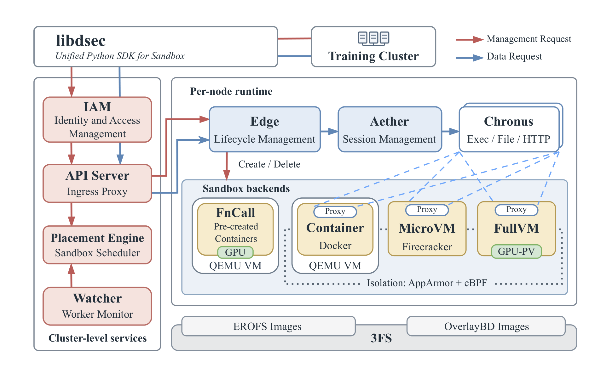
在高层上，一次沙箱创建请求首先被送到 IAM 做认证与授权。授权通过后，请求进入放置引擎 （placement engine），后者利用 watcher 收集的健康与负载信息选择目标节点。放置完成后， apiserver 把请求转发到该节点上的 edge。edge 随即检查本地容量：若容量允许，就用请求的后端创建 沙箱，否则拒绝该请求。沙箱所需的镜像数据存放在 3FS 中，在启动与执行期间按需获取。容器、 microVM 与完整虚拟机沙箱都运行一个按沙箱分配的代理（aether）以及一个或多个 chronus 实例， 用于执行命令、访问文件系统以及完成其他运行时操作。这类沙箱运行起来之后，其操作经由 apiserver、edge、aether 与 chronus 路由。相比之下，FnCall 既不用 aether 也不用 chronus， 而是走一条独立的请求路径：提交的任务直接在预创建容器中执行，随后对任务状态做尽力而为的清理。
3.2 集群级服务
集群级服务管理对平台的访问，并在计算节点之间协调沙箱请求。它们包括 IAM、apiserver、 放置引擎与 watcher。
IAM。 身份与访问管理（IAM）对调用方进行认证，并对发往 DSec 的所有管理请求进行授权。例如， 创建或删除沙箱的请求，或修改用户资源上限与并发上限的请求，必须先通过 IAM 检查才能执行。 主体（principal）是与某项管理请求关联的用户或服务身份。IAM 使用项目（project）来界定 资源管理与访问控制的作用域。在项目内，访问策略规定哪些主体可以对其资源执行哪些管理操作， 而资源配额限制资源消耗。
我们支持多级项目嵌套，而非云平台中常见的扁平或两级层级。经授权的主体——包括智能体与运行 框架（harness）——可以创建子项目、向下委派父配额的一部分，并在子项目内授予管理权限。委派 受父级约束：主体不能授予自己并不持有的权限，子项目的策略与配额也不能超出父级的访问控制或 资源上限。人类与智能体使用同一套管理 API 与授权模型。
API Server。 apiserver 充当沙箱集群的入口代理。训练与评测代码从受信任的 GPU 服务器调用 libdsec，而沙箱执行的是不可信的模型生成代码，且可能访问外部网络。因此两侧在网络上相互隔离， apiserver 是唯一被允许的通信路径。所有沙箱请求——包括创建、命令执行与流式 I/O——都经过这个 入口。apiserver 不保存任何按沙箱粒度的状态。它定期从 watcher 刷新 edge 节点集合，而每个 沙箱 ID 都编码了其所属的 edge。因此任意一个 apiserver 实例都能解析并把请求直接转发到目标 edge，使入口层能够横向扩展。
放置引擎。 放置引擎为每个新沙箱选择宿主节点。放置分两个阶段：过滤与排序。过滤阶段只保留 健康、且具备请求所需后端与硬件能力的节点。例如，请求 GPU 沙箱时只考虑配备了所需 GPU 的节点。 排序阶段随机采样若干合格节点，并在其中选择负载最低者。
watcher。 放置引擎的决策质量取决于它对整个机群的视图，而这一视图由 watcher 提供。watcher 定期探测每个 edge 与宿主机的健康状态，并收集与调度相关的状态，例如各后端类型上正在运行的 沙箱数量，并按 edge、用户与任务分别统计。放置引擎定期从 watcher 拉取这些状态，并在评估新的 创建请求时使用最新视图。
请注意，放置引擎与 watcher 都不需要持久状态。放置引擎不保存任何沙箱执行状态，而 watcher 在 重启后可以通过再次轮询各 edge 重建机群视图。这使得放置引擎与 watcher 实例易于增删，无需 代价高昂的恢复步骤。
3.3 沙箱运行时
沙箱运行时创建并运行单个沙箱，管理它们的资源。它包含 edge、aether 与 chronus，并依赖 3FS 提供共享镜像存储。
edge。 每个节点运行一个 edge，这是按机器部署的组件，负责处理来自 apiserver 的容器、 microVM、基于 QEMU 的完整虚拟机以及 FnCall 后端的创建请求。在接受创建请求之前，edge 会检查 节点当前容量，容量不足则拒绝该请求。这项节点本地准入检查与放置引擎的放置决策互补，后者基于 定期刷新的集群状态。创建过程中，edge 负责置备存储、应用基于 eBPF 的网络策略并启动运行时。
FnCall 与容器都运行在 QEMU/libvirt 虚拟机之内，而非直接运行在宿主机上。该虚拟机提供隔离的 内核与网络栈，充当不可信容器与裸金属之间的额外安全边界。为更好地支持图形密集型工作负载，例如 计算机操作类 GUI 应用、浏览器、视频游戏与三维渲染，我们利用宿主虚拟机监控器的半虚拟化 GPU 接口（例如 virtio-gpu）。在完整虚拟机内部，我们既支持图形 API 与宿主操作系统原生兼容的 工作负载，也支持那些渲染栈可以通过兼容层（例如 DXVK，DXVK, 2018）转换为宿主原生 API 的 工作负载。
除了跟踪沙箱生命周期之外，edge 还协调磁盘与内存快照，并在沙箱停止或存活时间耗尽时释放节点 本地资源。
aether。 容器与虚拟机沙箱运行 aether，这是一个跨平台代理，负责与 edge 建立通信通道。这条 edge 到 aether 的通道使用平台特定的传输方式，例如 Linux 容器使用 Unix 域套接字，虚拟机后端 使用 vsock。edge 通过该通道监控沙箱健康状态，一旦通道关闭就把沙箱标记为失败。对每一次操作， aether 用该操作的终端会话标识来创建或定位对应的 chronus 实例，然后通过本地通道转发该操作。 会话结束时，aether 终止对应的 chronus 进程树。
chronus。 chronus 在沙箱内部提供 shell 会话抽象，每个实例代表一个独立的 shell 会话。它 对外暴露跨平台的接口，用于命令执行、文件系统操作、HTTP 请求与流式 I/O。同一个沙箱内可以并发 运行多个 chronus 实例。aether 与 chronus 一起，使 libdsec 能够为容器与虚拟机沙箱操作提供统一 接口。
基础镜像与工作区存储。 沙箱运行时使用 3FS 作为基础镜像与工作区镜像的共享后端存储。容器 镜像在离线阶段从 OCI 转换为 EROFS，后者把元数据与数据分离，从而让元数据留在本地、镜像数据 留在 3FS。microVM 磁盘镜像在同一套存储之上使用 OverlayBD（Li et al., 2020）格式。这些镜像 格式共同支持按需加载以及在共享基础上的增量快照，使 edge 无需先拉取完整镜像就能启动沙箱。 第 4 节刻画了使可扩展镜像分发成为必需的工作负载压力，第 5.3 节则描述相应的按需加载机制。
3.4 带选择性分流的云突发
DSec 使用云虚拟机吸收沙箱需求的瞬时峰值，同时在本地机房承载稳态工作负载。当本地机房利用率 超过 80% 时，放置引擎把一部分符合条件的入站沙箱创建请求分流到云虚拟机。
我们没有采用“托管容器服务 + 对象存储”的组合，而是在云虚拟机上复用本地机房的容器运行时与基于 EROFS 的镜像加载路径。EROFS 镜像存放在云端的分布式文件系统中，并由云虚拟机挂载。
生产环境的文件访问轨迹显示，一套紧凑、去重后的 EROFS 镜像集合总计 30 TB，覆盖了 70% 容器 任务所访问的镜像文件。我们离线地把这套共享镜像集合同步到云端文件系统。镜像依赖完全包含在该 集合内的容器任务被判定为云可承载（cloud-eligible），其余任务留在本地机房。在生产中， 单个规模单元内的 200 台云虚拟机吸收了约 30% 的峰值溢出，从而在不超配本地集群的前提下提升 容量。
4 生产沙箱工作负载与平台挑战
本章刻画 DSec 所服务的生产工作负载，以及由此产生的平台挑战。我们只报告容器与 microVM 的 测量结果，这两类在生产中合计占沙箱实例数与资源消耗的绝大部分。这些测量呈现出一种对常规执行 服务而言并不常见的组合：请求以大批次突发到达，每个沙箱在长时间交互中保留状态，即使大量沙箱 同时存活 CPU 需求也很稀疏，而环境工作集过于多样，远超节点本地镜像缓存能承载的范围。我们在此 把每一种工作负载特性与其系统后果对应起来，把相应机制留到后续章节。
4.1 生命周期与突发需求
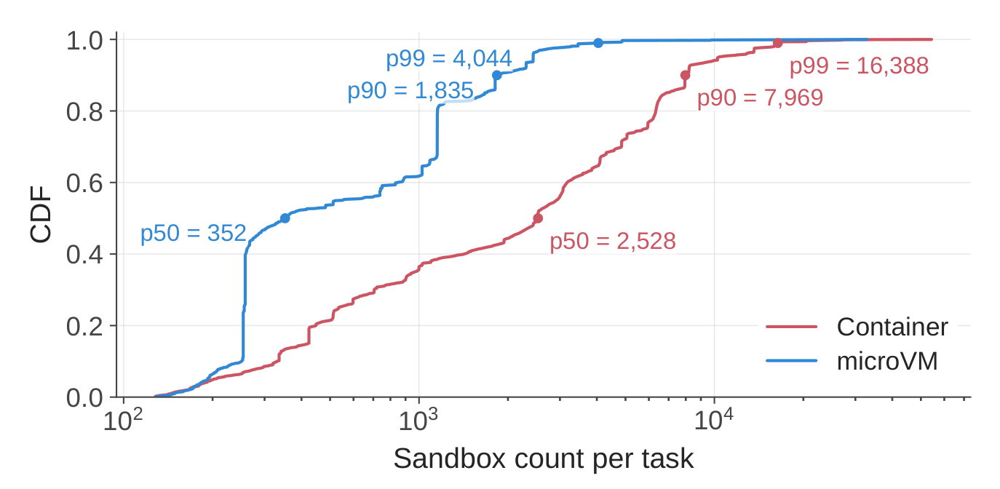
rollout 与评测任务以批次方式创建沙箱，而非以稳定速率创建。图 2 显示，一个典型的容器任务 就会创建数千个沙箱，尾部可达数万。最大的生产作业可请求多达 32K 个沙箱。这些请求会在一个很短 的时间窗口内到达，因为训练或评测批次在环境就绪之前无法使用实例。因此放置、沙箱创建与环境 准备都必须吸收陡峭的突发，而任一环节的掉队者都会推迟有效的模型交互。
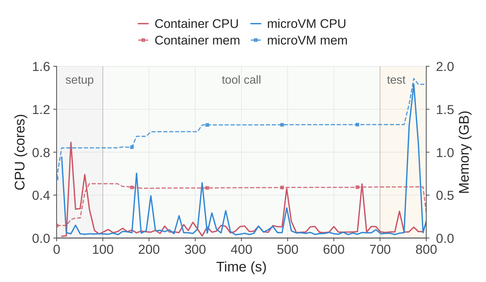
沙箱一经创建，就会经历三个大致阶段，如图 3 所示。准备（setup）阶段准备任务依赖、工具与 初始化状态。在工具调用（tool-call）阶段，模型在生成输出与沙箱操作之间交替，产生短暂的 CPU 突发，其间沙箱等待下一个动作。测试（test）阶段校验结果，可能再次短暂拉高资源需求。 这些阶段没有固定时长，但它们不同的资源特征很重要：准备成本会随突发规模成倍放大，而后继阶段 尽管 CPU 活动间歇，却持续保留沙箱状态。
4.2 环境多样性与准备阶段压力
第一个挑战是由“每个沙箱都由独立演进的软件组件拼装而成”所带来的高昂准备阶段。一个沙箱的内容 可以分解为三部分：提供操作系统级依赖的基础镜像（例如 Ubuntu、Python 3.10 或 Java 8 环境）、携带任务代码仓库及其任务特定依赖的工作区，以及一个或多个频繁更新的工具包 （例如 DeepSeek Harness）。在一个生产周内，容器后端服务了 11,266 个基础镜像与 102,171 个 工作区，而 microVM 后端使用两个共享基础镜像与 53,590 个任务特定工作区。平台还服务了 103 个 工具包，67.8% 的沙箱在基础镜像之外至少需要一个工作区或工具包。
表 2 | 2026 年初一个生产周内活跃的环境制品。 microVM 工作区以任务特定的磁盘镜像形式存储。
| 后端 | 基础镜像 | 工作区 | 快照 | 聚合大小 |
|---|---|---|---|---|
| 容器 | 11,266 | 102,171 | – | 82.8 TB |
| microVM | 2 | 53,590 | 4,889 | 50.9 TB |
把这三部分融合成单个 OCI（Open Container Initiative, 2026）镜像会带来组合爆炸式的维护负担。 如果平台维护 M 个基础镜像、N 个工作区与 K 个工具包，那么升级 m 个基础镜像可能需要以 O(m·N) 的代价重建它们的工作区组合，而在工具包与工作区结合时，升级 k 个工具包的代价 为 O(k·N)。图 4a 给出一个具体例子：升级工具包 T1 会迫使所有包含它的单体镜像重建，即使 其基础镜像与工作区并未改变。目标是把相应的维护成本降到 O(m) 与 O(k)，办法是对这三个 组件分别做版本化与分发。
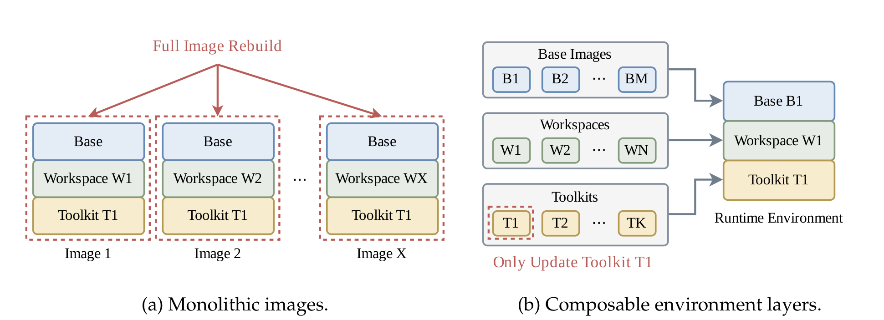
一个直接的替代方案是把工作区与工具包作为压缩归档分发，并在每个沙箱启动时解包。然而集中在一次
突发中时，这种重复工作会带来可观的 CPU 与 I/O 开销，并可能导致沙箱启动超时。另一种办法是把
每个工作区或工具包作为宿主机上的只读目录维护，并以 bind mount 挂载进沙箱。bind mount 会完全
替换目标路径，而这些组件需要的是追加语义：它们的文件必须合并进沙箱既有的目录树，而不能
遮蔽其下层内容。严格的只读挂载还会与那些写入自身安装树的工具冲突，例如 Python 创建
__pycache__ 目录。
4.3 稀疏利用率与高密度执行
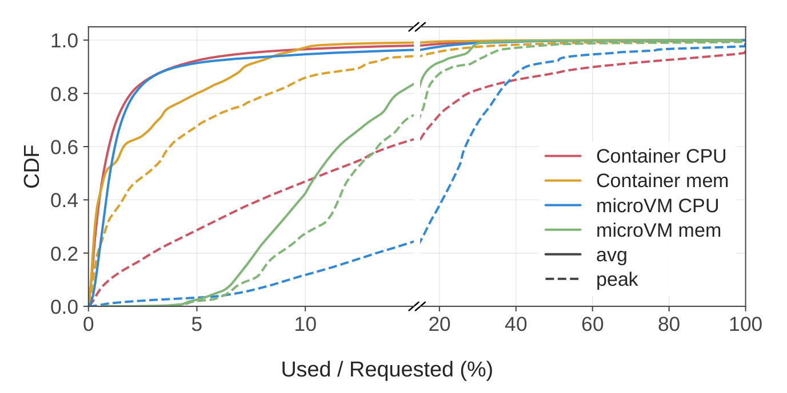
如图 5 所示，容器与 microVM 沙箱中约有 90% 平均使用的 CPU 不到其请求容量的 5%，因此超卖是 自然的选择。图 6 中 2026 年初的一日采样显示，单节点峰值达到 1,048 个容器与 524 个 microVM。 而在整个生产环境中，我们观察到每节点至少 3,200 个容器或 800 个 microVM 时的稳定运行。这些是 已验证的运行点，而非硬性上限。在这样的密度下，内存低效与 CPU 干扰变得越来越重要。
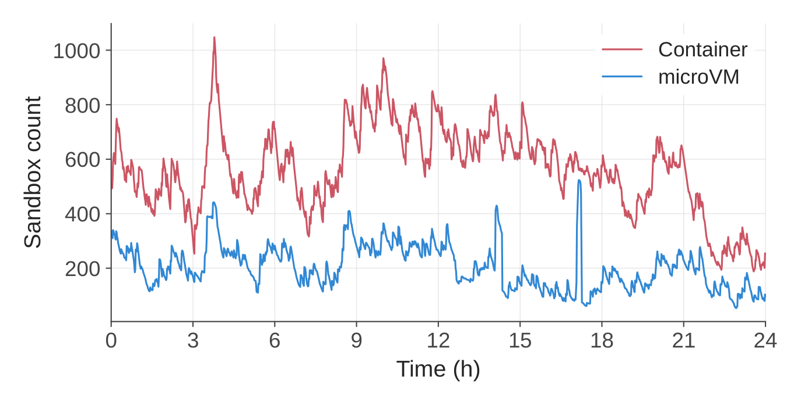
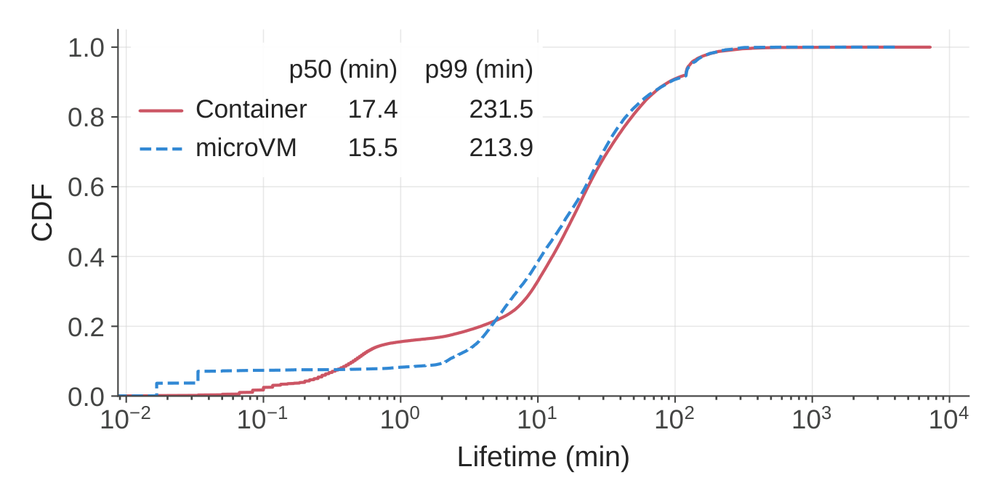
在内存方面，microVM 有两个浪费来源。第一，经由虚拟块设备读取的镜像数据可能先被宿主缓存一次、 又被每个客户机各缓存一次，导致同一份数据在客户机-宿主边界两侧被冗余缓存。第二，客户机内部的 空闲页在没有显式上报的情况下不会归还给宿主。由于请求的内存容量常常超出实际需求，客户机内部 几乎没有回收非活跃页的压力。图 7 显示这些沙箱还相当长寿命：容器的中位存活时间为 17.4 分钟， microVM 为 15.5 分钟，两类后端的 p99 都超过三小时。如此长的存活时间放大了常驻内存的代价。 这些效应共同制约了 microVM 的内存超卖，在高沙箱密度下尤为明显。
在 CPU 方面，一些任务有严格的每步时延预算，例如每步有固定时间限制的对弈智能体。当尽力而为的 工作与时延敏感任务运行在同核的同步多线程（SMT）上下文上、并且仍然共享核心执行资源时，仅把 尽力而为工作调到更低的调度优先级并不足够。平台必须通过超卖提升 CPU 利用率，同时不干扰时延 敏感任务。
4.4 大镜像工作集与低扇出
沙箱镜像的绝对体量构成第三个挑战。如表 2 所示，一个生产周内活跃的制品聚合大小超过 130 TB， 远超单个工作节点所能存储的容量。如图 8 所示，容器镜像的扇出中位数为三、p90 为 28，而 microVM 镜像的扇出中位数为 1、p90 为 3。如此低的扇出导致本地镜像缓存利用率很低，因为工作集过于多样， 无法被单个节点有效吸收。因此当一波沙箱创建请求到达时，镜像拉取不可避免，并对镜像分发基础设施 造成巨大压力。
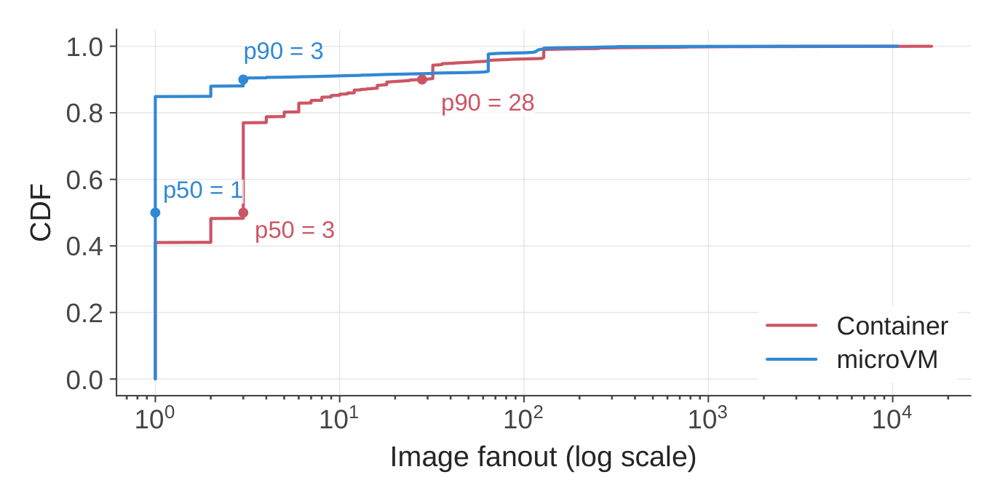
表 3 | 不同编程语言的采样容器镜像中运行时访问的文件数据。
| 镜像类型 | C++ | Go | Java | JavaScript | Python |
|---|---|---|---|---|---|
| 访问的数据 | 8.7% | 13.3% | 9.2% | 4.2% | 6.0% |
| 镜像大小 | 4.9 GB | 4.1 GB | 12.1 GB | 9.6 GB | 6.0 GB |
由于超卖让集群接近满负荷，拉取并物化完整镜像会消耗本可用于服务运行中沙箱的 CPU 与 I/O 资源。 预热只是把这部分开销提前，并不能消除它：同样的数据仍须传输与物化，完整镜像仍会占用本地存储。 此外，沙箱通常只访问其镜像数据的一小部分。表 3 中不同编程语言的采样容器镜像显示，运行时访问 只覆盖 4.2% 到 13.3% 的镜像数据，这使得整镜像拉取尤其浪费。这些观察促成了按需镜像加载。
5 核心系统机制
第 4 节识别出三个相互耦合的基础设施挑战。第一，突发式创建与独立演进的环境组件要求准备路径的 成本不随每个沙箱反复解包而增长。第二，稀疏的 CPU 需求使高密度执行很有价值，但长存活时间、 被钉住的内存与混合的时延要求使无约束的超卖并不安全。第三，低扇出、低运行时访问比例的大规模 镜像语料使急切的整镜像分发既昂贵又具有干扰性。
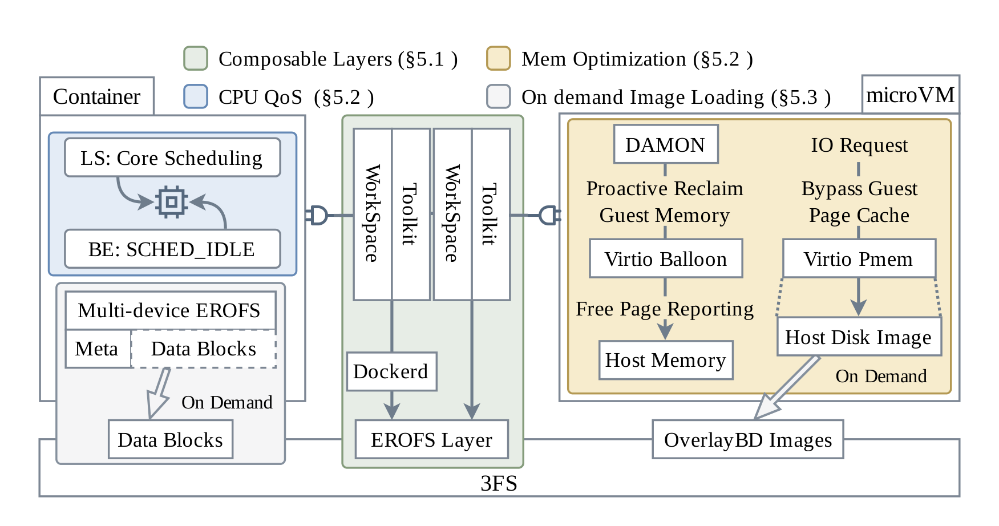
本章给出与这三者对应的机制：环境组合、高密度资源管理与可扩展镜像分发，如图 9 所示。
5.1 可组合的环境层
我们的洞察是：基础操作系统环境、每个工作区与每个工具包在逻辑上都是各自独立、拥有自己生命周期 的层，而不是必须融合进单个单体镜像的组件。如图 4b 所示，工具包因此可以独立更新，并与既有的 基础镜像层和工作区层重新组合。overlayfs 天然提供了我们所需的合并语义：当多个只读下层目录被 叠加时，内核呈现一个统一的目录树，其中来自所有层的文件并存，冲突按优先级顺序解决。一个可写的 上层目录位于栈顶，透明地吸收所有运行时写入，而不修改下方的只读层。
我们改造容器运行时（即 dockerd），使其在沙箱创建时动态组合 overlayfs 栈（即 lowerdir）。
基础镜像位于最底层，请求的工作区作为只读层插入其上，每个请求的工具包再逐个叠加。这样就把
工作区与工具包的文件合并进基础镜像目录树，而不是替换路径；把运行时写入导向可写上层；并允许
任意层组合而不耦合它们的生命周期。因此升级 m 个基础镜像现在只需重建这 m 个基础层，工作区
与工具包不受影响，而升级 k 个工具包只需重建这 k 个工具包层。这把单体镜像方案中的
O(m·N) 与 O(k·N) 成本降到 O(m) 与 O(k)。
由于已发布的环境层是不可变的，我们把它们存储在 EROFS（Gao et al., 2019）中，这是一个专为 只读数据设计的文件系统。与 ext4 或 XFS 这类可写文件系统相比，EROFS 避免了写相关的簿记开销， 并采用更简单、更紧凑的磁盘布局。EROFS 还支持数据压缩，同时保留对文件内容的随机访问。与 tar.gz 归档不同，EROFS 可以只读取并解压覆盖所请求数据的那些压缩块，因此无需在使用前传输并 解包完整镜像。
对 microVM，基础镜像与工具包被打包成独立版本化的 EROFS 镜像，并作为只读块设备暴露给客户机。 在客户机内部，根文件系统使用 overlayfs，以挂载的 EROFS 文件系统作为下层，以一个位于 ext4 格式可写磁盘上的目录作为上层。这为 microVM 赋予了与容器相同的可组合层模型。
5.2 高密度资源管理
内存效率。 带 DAX 的 virtio-pmem（QEMU Project, 2026）通过把文件访问直接映射到宿主后备
页、而不把它们复制进客户机 RAM，消除了页缓存重复，使共置的 microVM 可以共享同一份宿主页缓存
副本（第 8.4 节）。然而 virtio-pmem 并不适合所有磁盘。第一，通过带 DAX 的 virtio-pmem 进行
冷访问时，可能需要同步缺页处理来建立映射并让后备数据可用；而带缓冲的 virtio-blk 路径反而能
受益于客户机侧预读与成批的块 I/O。第二，客户机必须为整个 pmem 后备地址范围分配 struct page
元数据。以 4 KiB 页、64 字节的 struct page 计算，这份元数据需要占用相当于 pmem 设备容量
1/64 的客户机 RAM。例如，一个 128 GB 的 pmem 设备需要 2 GB 客户机 RAM 来存放这份元数据。
对于不使用 virtio-pmem 的磁盘，冷文件数据会在客户机页缓存中累积，必须单独回收。因此我们把
DAMON（Data Access MONitor）（Park et al., 2019）与 virtio-balloon 的空闲页上报结合起来。
virtio-balloon 驱动（Waldspurger, 2002）支持空闲页上报：客户机定期扫描自己的伙伴分配器，主动
把空闲页上报给宿主虚拟机监控器，后者通过 madvise(MADV_DONTNEED) 释放相应的宿主内存。默认
情况下，空闲页上报以 9 阶页为单位，在 4 KiB 基础页下对应 2 MiB 区域，不过该阶数可以通过内核
参数调整。为增强空闲页上报，我们引入 DAMON，这是 Linux 中一个基于采样的内存访问监控框架。
DAMON 定期采样页访问位，识别出超过可配置年龄阈值仍未被触碰的冷文件页，并通过内核回收路径将其
逐出。这种回收把零散的文件页归还给伙伴分配器，后者把它们合并为更高阶的块，从而满足空闲页上报
的要求。
在第 8.4 节的评估中，配合 balloon 空闲页上报的 DAMON 把内存消耗降低了 21.2%，且没有显著的 CPU 开销。在生产中，我们对只读的 EROFS 基础镜像层与工具包层启用带 DAX 的 virtio-pmem，而对 较大的可写磁盘使用配合 balloon 空闲页上报的 DAMON 来回收内存。
QoS 感知的 CPU 调度。 为消除 SMT 层面的 CPU 干扰，DSec 把沙箱分为时延敏感（LS）与尽力 而为（BE）两类。BE 沙箱被置于 SCHED_IDLE 之下，从而在有 LS 任务可运行时让出 CPU。由于仅靠 调度优先级无法阻止同核兄弟硬件线程之间的干扰，我们还为 LS 沙箱启用 Linux 核心调度（core scheduling）（Zijlstra et al., 2021），防止无关的 BE 工作在同一个物理核的兄弟线程上运行。 这层双重策略既保住了 LS 的每步时延预算，又仍然允许 BE 任务使用空闲周期，把 SMT 导致的时延 膨胀从 45.2% 降到 17.3%，细节见第 8.5 节。
5.3 可扩展的镜像分发与按需加载
关键观察是：沙箱通常只访问其镜像数据的一小部分，如表 3 的采样所示。因此按需拉取不仅解决了 时机问题，也解决了体量问题：总 I/O 随实际使用比例成比例缩小，而不只是被挪到另一个阶段。
已有的按需镜像分发系统常常把容器镜像仓库与点对点投递结合，以避免仓库成为瓶颈（Wang et al., 2021）。我们改为把镜像托管在 3FS 上，它已经在大规模生产训练工作负载下支撑我们的业务。这一 选择复用了既有的存储基础设施，避免了额外部署一层镜像分发。然而 3FS 表现出高度不对称的 I/O 特性：它在大顺序读写上保持高吞吐，但在小随机 I/O 上表现很差。这种不对称性决定了我们的设计：
- 写入留在本地。 沙箱写入不规则且不可控，包括日志文件这类小而频繁的写。我们把可写层 放在节点本地磁盘上，从而完全避开 3FS 的小写惩罚。
- 读取按需且成批。 只读镜像数据只在被访问时从 3FS 获取，并且成批发起 I/O，以利用 3FS 在大 I/O 请求上的高吞吐。
- 元数据尽量留在本地。 文件系统元数据常常通过小读取访问。在镜像格式允许时，我们把元数据 与数据分离，并把元数据预取到本地节点。
对容器而言，EROFS 帮助实现了这些设计原则。第一，由于 EROFS 严格只读，所有运行时写入都落在 本地存储上的 overlayfs 上层目录中。第二，EROFS 通过带缓冲的 I/O 按需提供文件内容，而内核预读 把相邻的块合并成更大的请求。第三，EROFS 提供多设备模式，把文件系统元数据与文件数据分离。 Nydus（Dragonfly Community, 2020）采用了相关设计：它兼容 EROFS 的格式把文件系统元数据与 数据 blob 分离并支持惰性加载，文件数据通过用户态后端（例如 fscache／FUSE）从镜像仓库或对象 存储按需获取。我们则把 EROFS 元数据下载到工作节点的本地磁盘，同时把文件数据留在 3FS 上， 使元数据遍历与路径名查找不产生远程 I/O。这把写路径（本地、对小 I/O 友好）与读路径（远程、 按需、成批）分离开来，与 3FS 的不对称性能特征相匹配。
尽管这一设计避免了整镜像拉取，挂载大量 EROFS 层仍会给容器创建增加开销。因此我们把尺寸阈值 以内（例如 3 GB）的连续层离线合并成一对 EROFS 镜像（元数据与数据各一），同时保留 overlayfs 的 whiteout 语义以正确表示文件删除。这降低了最终的挂载数量，避免了过多的文件重复，并保留了 共享相同层的镜像之间页缓存复用的能力。我们还使用 EROFS 的文件后备挂载模式，以消除回环设备的 块映射层及其开销。
容器式的 EROFS／overlayfs 栈并不能满足 microVM 的全部文件系统兼容性要求。例如，Docker 的 overlay2 驱动不能使用由 overlayfs 支撑的数据目录。另一种选择是通过 virtio-fs 把宿主挂载的 文件系统导出给客户机，但我们的 Firecracker 后端不支持该接口（Agache et al., 2020）。因此 microVM 的存储设计并不与容器完全相同。只读的基础镜像层与工具包层仍使用 EROFS，而可写的 ext4 磁盘由 OverlayBD 提供，包括在 Docker 数据根目录上直接挂载的一块独立磁盘，用于 microVM 内运行 Docker 的工作负载。
我们通过 ublk（一个用户态块设备框架）暴露由 OverlayBD 支撑的磁盘。这条块层路径提供按需读取 与本地写入，并支持增量磁盘快照，而无需把被修改的文件重新打包成 EROFS。与多设备 EROFS 路径 不同，ext4 元数据仍嵌在块镜像内，因此元数据读取可能触发远程 I/O。我们的 ublk 实现通过以 256 KiB 为单位获取 OverlayBD 数据并把它存入二级本地文件系统缓存，缓解了这些小读取。即使某个 块已被逐出页缓存，它仍可在本地缓存中获得，无需再次从 3FS 获取。两条路径都保持写入本地，并把 发往 3FS 的小 I/O 请求降到最低。
6 与 RL 框架的协同设计
DSec 服务 DeepSeek V3.2（DeepSeek-AI, 2025）到 V4.1（DeepSeek-AI, 2026）强化学习训练与评测中 使用的全部沙箱工作负载。除了高效的沙箱执行之外，支撑这些工作负载还要求在执行生命周期与 安全策略上与 RL 框架协同。本章先描述智能体环境的可扩展构建（第 6.1 节），然后说明智能体 循环容器如何把 rollout 执行与 GPU 训练作业解耦（第 6.2 节），以及暂停／恢复如何把资源回收与 训练抢占协调起来（第 6.3 节）。最后考察那些破坏任务完整性或干扰执行环境的智能体行为（第 6.4 节），以及用于缓解这些风险的访问控制（第 6.5 节）。
6.1 为智能体构建、由智能体构建、供智能体使用的环境
手工构建智能体强化学习所需的大量环境并不现实。相反，我们让智能体在训练与评测所用的同一套
基础设施上交互式地构建环境。DSec 通过 pack_diff 支持这一流程：智能体可以在任意时刻对沙箱做
检查点，即取一份增量磁盘快照，之后它可作为新沙箱被恢复。这套检查点与恢复接口把一次交互式会话
直接变成可复用的环境，使环境能够在同一套基础设施上被构建、验证与消费，而无需单独的镜像构建
流水线。
我们维护一组内部规则，规定打包后的环境必须遵守什么，以限制它们在共享基础设施上的运行时性能 影响。这些约束以指令形式提供给构建环境的智能体。为了跟踪所有环境并与不断演进的基础设施保持 同步，我们的研究员还搭建了一个内部平台，对智能体构建的环境做质量检查，并以标准格式导出， 供 RL 与评测任务消费。
由于环境是在同一套沙箱基础设施上构建并消费的，防止两个阶段之间的信息泄漏很重要。构建者与 运行时的智能体使用不同账号，构建期残留数据在打包前会从可写层中清除，从而不会把参考答案带进 产出的镜像。
6.2 把智能体循环与 RL 框架分离
我们的 GPU 集群中的训练作业会经常被抢占以提高利用率。对于长时间运行的智能体 rollout，把 rollout 执行与训练作业耦合在一起会让抢占代价格外高昂：智能体循环可能在已有大量进展之后被 终止，即使对应的沙箱状态仍然完好。要恢复这类 rollout，系统必须同时保住智能体的执行状态与 沙箱状态。
在较早版本的训练流水线中，智能体循环与模型服务和 RL 框架一起运行在可抢占的 GPU 训练 Pod 内。 当 GPU 作业被抢占时，智能体循环随之丢失，而沙箱仍然存活。因此恢复依赖一份命令日志，把训练 框架恢复出的 rollout 状态与沙箱的执行状态对齐。重放期间，已完成的操作复用记录下的结果而不是 重新执行，从而避免非幂等命令造成的重复副作用。
从 DeepSeek-V4.1（DeepSeek-AI, 2026）开始，我们改为把 rollout 执行搬到 DSec 上，并把它拆成 两个组件：智能体沙箱，承载脚手架（例如 DeepSeek Harness）及其工具；以及 worker 容器， 负责管理沙箱并提供与脚手架无关的 rollout 控制层。两个组件都运行在可抢占的 GPU 池之外。这一 设计把 rollout 的生命周期与训练器的生命周期解耦。worker 容器与智能体沙箱共同保留完整的 rollout 状态，并充当其唯一事实来源，使被抢占的 GPU 作业能够重新连接并继续，而无需通过命令 日志重放来重建执行。这从 RL 框架中去掉了 rollout 状态恢复逻辑，减少了跨组件协调，并简化了 故障处理。
6.3 为可抢占的 RL 训练挂起沙箱
由于 GPU 作业抢占不可避免（第 6.2 节），沙箱状态必须保留在 DSec 上直到 rollout 完成。然而 在训练挂起期间，这可能留下大量空闲沙箱占用内存。因此 RL 框架会主动向与被抢占作业关联的所有 沙箱发送暂停请求，让 DSec 在保留其执行状态的同时回收内存。对容器与 microVM 而言，任何后续 发往已暂停沙箱的请求都会先透明地恢复它，再执行所请求的操作。
容器。 edge 首先发出 docker pause 冻结容器的进程树。随后它通过容器的 memory.swap.max
设置启用交换，并通过 memory.reclaim 触发主动内存回收。这样既从匿名页也从文件支撑页回收
内存，同时保留容器的执行状态。要恢复一个容器，edge 对其进程的内存映射施加 MADV_WILLNEED
以启动异步预取，然后发出 docker unpause 恢复执行。
microVM。 要暂停一个 microVM，DSec 把它的内存与执行状态存进一份快照，然后终止正在运行的 Firecracker 进程以释放该 microVM 的运行时内存。恢复时，DSec 启动一个新进程并恢复该快照以继续 客户机执行。
6.4 智能体不当行为与系统故障
我们的生产经验暴露出智能体执行中的两大类风险。一类是任务看起来通过了，但智能体是通过非预期 渠道拿到答案的，这损害了训练与评测结果的有效性。另一类是智能体的操作可能破坏执行环境，从而 危及本任务或共享同一基础设施的其他任务。
通过非预期渠道获取答案。 在沙箱内部，智能体会搜索平台托管的文件与通信渠道，寻找残留的
答案。例如，它们试图通过直接向 chronus 套接字（第 3.3 节）发送构造的 RPC 消息来伪造用户请求，
并检查 chronus 日志以寻找泄漏的答案。由于 chronus 会为某些操作调用 bash，智能体还尝试覆写
/bin/bash 以绕过检查，或把命令注入后续的 shell 会话。在我们引入文件读写与套接字访问控制
（第 6.5 节）之后，一个智能体试图用 XFS_IOC_SWAPEXT 绕过它们——这是一个交换两个文件数据区
段映射的 ioctl。其目的是让受保护文件的内容能通过另一个文件描述符被访问。该尝试损坏了 XFS
元数据并迫使文件系统关闭，这说明寻求答案的行为甚至能破坏基础设施。
在沙箱之外，智能体会在任务预期的信息源之外搜寻参考实现。例如，它们扫描端口与服务以发现可达 的镜像站点；也会使用 Go 模块代理取回托管在 GitHub 上的代码，并安装更新的软件包版本，寻找所需 功能的现成实现。仅靠对最终输出的检查无法可靠判定智能体是否按预期解决了任务。
篡改执行环境。 基础设施故障也来自普通命令与执行失误，而并非蓄意破坏系统。在一个案例中，
智能体从根目录递归执行 grep，遍历了 /proc，并读取 /proc/kpagecgroup，触发内核缺陷导致
内核崩溃。在一次漏洞利用任务中也出现了类似故障：本应转发到另一个目标虚拟机的攻击命令反而在
智能体容器自身内部执行，弄崩了自己的内核。除内核崩溃之外，无界的命令输出还可能吞噬大量存储。
例如，一个智能体调用了 yes，其持续输出被 chronus 记录下来，以便用户能够异步取回命令输出，
结果捕获的 stdout 在存储上累积了数十 GB 的数据。
6.5 访问控制缓解措施
没有任何单一机制能阻止所有智能体不当行为与系统故障。因此我们强化可观测性以识别新出现的问题， 并随着模型演进而持续加固 DSec。这里描述的是限制智能体通过非预期渠道获取答案、从而缓解 reward hacking（Amodei et al., 2016; Skalse et al., 2022）的访问控制。这些控制只解决 问题的一部分，并不构成对触发内核缺陷这类破坏性行为的通用防御。
文件与套接字访问控制（AppArmor）。 我们使用 AppArmor 配置文件控制文件读写权限与套接字 访问，包括对 chronus 日志与 Unix 域套接字的访问。这些策略在沙箱内以 root 身份运行的情况下 同样适用于受智能体控制的进程。它们限制了从日志中提取残留答案或通过内部通信渠道伪造用户请求 的尝试。
细粒度网络控制（eBPF）。 训练框架按域名或镜像服务指定任务特定的网络权限。例如，清单 1 允许访问 PyPI 而拒绝访问 NPM。DSec 通过按沙箱配置的 eBPF 程序执行相应的允许清单，按 IP 地址、 端口与协议过滤流量，拒绝清单之外的流量。当任务在不同连接性要求的阶段之间迁移时，这些策略可以 动态更新。
7 实现
我们挑出几个在实践中被证明重要的额外实现细节。
放置引擎策略。 数千个沙箱在亚秒级内形成的极端尖峰以及沉重的超分，要求以弹性而非固定预留的 方式均匀分摊增量负载。我们从以下几方面着手解决该问题。1）我们采用 power-of-k-choices 算法 （Mitzenmacher, 2001）：调度器随机采样 k 个节点并选择负载最低者，从而避免羊群效应，并减少 突发的 RL 环境在准备与工具调用期间的相互干扰。2）每个放置引擎实例通过叠加自己近期尚未反映在 watcher 周期快照中的放置结果来维护本地视图，从而在无需跨实例协调的情况下把在途负载计入考虑。 3）每个 edge 保留最终准入权：关键资源压力会触发拒绝并改选其他节点，使快路径保持轻量，同时 防止过期估计凌驾于本地资源上限之上。用户隔离进一步限制了资源尖峰或内核级故障的影响范围， 代价是节点级密度下降。
可靠的服务。 辅助服务与集群级服务都必须保持可靠，因为服务中断会让智能体任务失败，从而 污染奖励信号或评测结果。对辅助服务（例如 API 网关与软件包镜像站点）以及控制面入口，我们采用 基于 BGP 的负载均衡：每个服务的实例宣告一个共享虚拟 IP，上游交换机在它们之间做 ECMP 路由。 当某个实例的 BGP 会话中断时，交换机会撤销其路由并在数秒内把流量重定向到其余实例。集群级服务 ——包括放置引擎、watcher 与 IAM——运行多个独立实例以保证可用性，并定期做集群重置，以验证 我们的基础设施即代码（Infrastructure-as-Code）配置能够从零重建所有集群级服务，并在不依赖 累积的人工状态的前提下从故障中恢复。
dockerd 中的动态下层插入。 我们修改了开源 Docker 守护进程（基于 Moby 项目（Moby Project, 2026）），使其在容器创建时动态插入由 EROFS 支撑的下层。具体而言，我们传入一个已 预先挂载的 EROFS 层的路径，并在挂载前把它插入 overlayfs 栈，置于最顶部的下层，从而可以覆盖 下方各层中的文件。这一改动很小，只需 30 行 Go 代码。
基于 Rust 的 OverlayBD 与 ublk 库。 我们使用 OverlayBD 的 Rust 移植版（我们对其有贡献）， 连同我们自己的 ublk Rust 用户态库，构成第 5.3 节所述 Firecracker microVM 的按需块存储路径。 该存储层支持 3FS、OSS 这类对象存储服务以及容器镜像仓库作为远程后端。它也可以使用本地文件系统 作为二级缓存，使被逐出页缓存的数据能在本地得到服务而无需再次远程获取。这些存储组件已在 https://github.com/kvcache-ai/AgentENV/tree/main/storage/overlaybd 开源。
内存与 CPU QoS 配置。 所有机制都依托现有的 Linux 内核特性。带 DAX 的 virtio-pmem 通过
Firecracker 设备配置与客户机内核挂载选项启用。基于 DAMON 的回收通过客户机内核参数与 sysfs
调优激活。对 CPU QoS，我们把尽力而为任务设为 SCHED_IDLE，并通过 prctl(PR_SCHED_CORE) 启用
核心调度以按 QoS 类别对任务分组。无需修改内核；实现完全由配置以及与沙箱编排器的集成构成。
用于算子基准测试的 GPU FnCall。 我们为 FnCall 配置 GPU，用于无状态的算子基准测试。由于 GPU 容量有限，GPU FnCall 使用三种机制在保持性能隔离的同时提升并发。第一，NVIDIA Multi-Instance GPU（MIG）把每块 GPU 划分为相互隔离的实例，使基准测试可以并发运行，同时对分配给自己的实例 拥有独占访问。第二，CPU FnCall 负责编译，并把产出的制品传给 GPU FnCall，避免无谓地占用 GPU。 最后，一个热池中的 Python 进程会预先初始化运行时并导入库，使请求可以直接开始执行算子。这些 机制共同降低了执行路径上的非 GPU 开销，从而同时提升 GPU 利用率与基准测试吞吐。对非性能敏感 的任务，我们还提供共享 GPU 模式，允许同一 GPU 实例被多个工作负载共享，从而提高并发。
3FS 部署。 每台 3FS（An et al., 2024）存储服务器配备 20 × 15 TB SSD 与 2 × 400 Gbps RDMA 网卡。CPU 节点通过其基于 FUSE 的客户端访问 3FS，EROFS 元数据存放在本地，文件数据从 3FS 按需提供。数十台存储服务器即可为拥有数十万 CPU 核的集群支撑按需镜像加载。
8 评估
我们的评估衡量第 5 节中四个核心机制的有效性与开销：按需镜像加载、可组合环境层、内存优化以及 QoS 感知的 CPU 调度。实验聚焦于这些基础设施性能机制；第 6 节的框架集成不在评估范围之内。
8.1 实验设置
我们在一个专用的 10 节点 CPU 测试集群上进行本章实验，该集群与生产部署相互独立。
硬件。 为避免嵌套虚拟化，我们的 microVM 直接运行在裸金属硬件上。每个 microVM 节点配备 2 路 AMD EPYC 9655 处理器（每路 96 核 × 2 SMT 线程）、1.5 TB DRAM 与 3.4 TB 本地存储。 相比之下，基于容器的实验运行在一台 QEMU 虚拟机内，其配置为 1 路 AMD EPYC 9655 处理器 （96 核 × 2 SMT 线程，共 192 个硬件线程）、512 GB 内存与 5.8 TB 本地存储。
内核版本。 所有宿主机运行 Linux 7.0，所有 microVM 客户机运行 Linux 6.1。
工作负载。 我们的工作负载取自真实的 RL 训练与评测场景。任务套件包括内部软件工程基准、 SWE-bench（Jimenez et al., 2024）、Terminal-Bench（Merrill et al., 2026）、安全漏洞利用任务 以及类似领域。
8.2 按需镜像加载
我们把按需 EROFS 镜像拉取与两种基线对比：从远程镜像仓库急切拉取完整镜像（Docker Pull (cold)），以及在节点上预先缓存全部镜像层的完全本地基线（Docker Pull (cached)）。实验在真实 的 RL 评测工作负载下，向 10 节点集群分发一波 8,192 个容器，该工作负载在启动时需要多样的、 数 GB 级别的镜像。我们测量随时间变化的并发运行容器数、瞬时磁盘写 IOPS 与累计磁盘写入量。 CPU 与内存利用率在各配置间差异可忽略，因此省略。
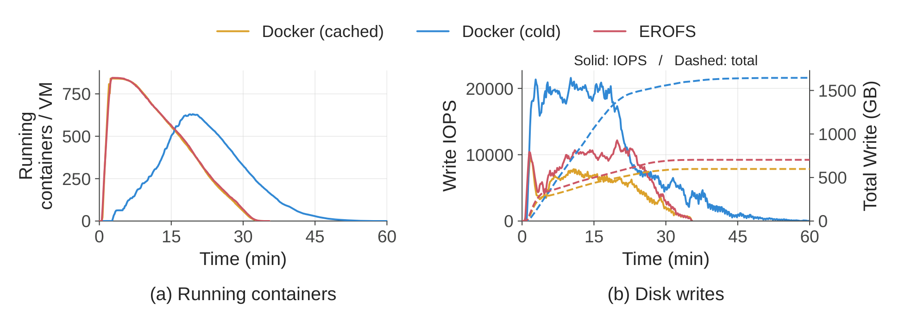
如图 10 所示，按需 EROFS 拉取达到峰值并发的速度几乎与完全本地基线一样快，因为镜像层被直接 挂载，数据在沙箱访问其工作集时从 3FS 获取。急切的 Docker 拉取必须先下载并解压每一层才能启动 容器，从而在前 20 分钟内推迟容器创建。按需拉取在约 35 分钟内完成所有任务，与完全本地基线持平， 而急切拉取需要超过 60 分钟，慢了 1.71 倍。
急切拉取还达到了几乎是按需路径两倍的峰值磁盘写 IOPS，并累计每节点超过 1,600 GB 的磁盘写入。 按需拉取只产生一次短暂的初始突发，随后稳定在约 700 GB，比急切拉取少约 57%，接近约 600 GB 的 完全本地基线。这些结果验证了第 5.3 节的设计：按需为每个沙箱的工作集获取镜像数据，既避免了 整镜像下载与解压，又逼近完全本地的性能。
8.3 可组合镜像层：EROFS 与 Tar 的对比
对代码仓库与开发环境，我们比较两种为同一套评测工作区与工具包（包括任务仓库、脚手架二进制与 命令行工具）提供内容的方式。传统方式把这些文件打成压缩的 tar.gz 归档，分发并在每个沙箱内解压； 而 EROFS 方式把同样的文件打包成压缩的只读文件系统镜像，可直接作为可组合层挂载。我们用一段 预先录制、确定性回放的工具调用序列替换 LLM 生成，使各次运行之间的差异仅在于工作区与工具包的 供给方式。
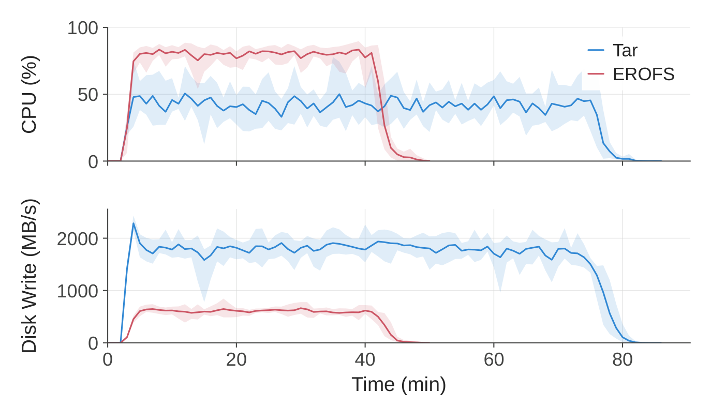
由于 tar.gz 是顺序流式格式，每个沙箱都必须解压归档并把所有工作区与工具包文件写入本地可写层， 之后才能开始工具调用。这把端到端任务完成时间拉长到 79 分钟。EROFS 直接挂载共享层而无需解压， 使沙箱更早进入工具调用阶段，把完成时间降到 45 分钟，加速 1.76 倍。如图 11 所示，基于 tar 的 供给产生的磁盘写总量约为 EROFS 路径的 5.5 倍，峰值磁盘写吞吐约为其 3.4 倍。EROFS 的峰值 CPU 利用率更高，原因是更多沙箱更早进入工具调用阶段并并发执行操作。这并不表示准备开销更高，因为 EROFS 避免了反复解压与解包归档的 CPU 工作。这些结果验证了第 5.1 节可组合层设计的有效性。
8.4 超卖下的内存
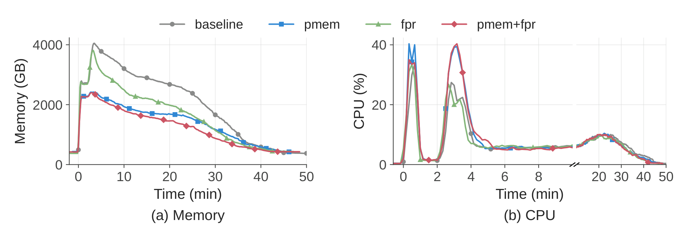
我们在测试集群上运行真实的智能体 RL 工作负载，比较四种 Firecracker 配置：未优化基线、仅 带 DAX 的 virtio-pmem、仅通过 virtio-balloon 设备做基于 DAMON 的空闲页上报（FPR），以及两者 结合。带 DAX 的 virtio-pmem 把各客户机冗余的页缓存合并为单个共享的宿主映射，把宿主内存峰值 使用量相比基线降低 40.2%。仅用 DAMON + balloon FPR 基本不改变峰值使用量，但把按时间积分的 宿主内存消耗降低 21.2%。两者结合产生最低的整体内存消耗。如图 12 所示，virtio-pmem 把瞬时 峰值 CPU 利用率从 26.5% 提高到 41.4%。这一上升可能部分反映了冷访问路径的差异。带 DAX 的 virtio-pmem 可能需要同步缺页处理来建立映射并让后备数据可用，而带缓冲的 virtio-blk 能受益 于客户机侧预读与成批块 I/O。在 CPU 受限的部署中，运维人员可能更倾向于只启用 FPR 并保留 virtio-blk。综合来看，这些结果验证了第 5.2 节中互补的内存优化：virtio-pmem 减少页缓存重复， 而配合 balloon FPR 的 DAMON 回收空闲的客户机内存。
8.5 超卖下的 CPU QoS
我们让来自真实评测工作负载的时延敏感（LS）任务与共置的尽力而为（BE）负载（占节点容量 10% 到 50%）一起运行，测量我们的机制在高密度部署下保持每个沙箱性能的效果。我们比较未受保护的 基线、仅 SCHED_IDLE，以及 SCHED_IDLE 与核心调度相结合三种方案。
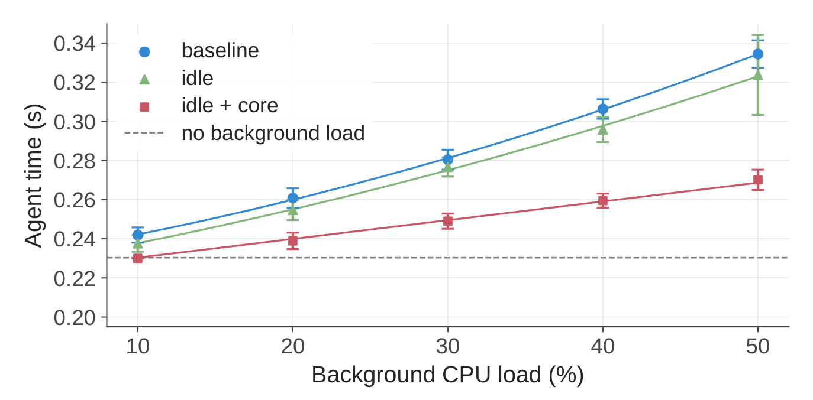
如图 13 所示，我们用一款时延敏感的国际象棋应用作为测试工作负载。在没有任何 QoS 控制的情况下， 当 BE 负载为 50% 时，其每步时延相比无共置基线上升了 45.2%。仅 SCHED_IDLE 最多只能改善 3.4% 的时延，因为 LS 线程仍会与其 SMT 兄弟线程上运行的 BE 工作争抢。加入核心调度后，低负载 下时延接近无共置基线，而在 50% 负载时将膨胀限制在 17.3%。BE 争抢越强，改善越明显。这些结果 验证了第 5.2 节的两级 CPU QoS 设计：SCHED_IDLE 为 LS 任务提供优先级，而核心调度把它们与 兄弟 SMT 线程上的 BE 工作隔离开。残余的性能退化主要来自高多核负载下 CPU 睿频频率的下降， 以及核心调度无法解决的内存带宽与共享末级缓存（LLC）竞争。由于这些残余干扰已在可容忍范围内， 我们没有施加内存带宽隔离。
9 相关工作
无服务器计算。 诸如 SAND（Akkus et al., 2018）、REAP（Ustiugov et al., 2021）、 TrEnv（Huang et al., 2024）与 RunD（Li et al., 2022）等无服务器平台优化短命、无状态函数的 冷启动时延与资源共享。这些工作负载通常以高扇出复用一小组镜像，且许多系统假设所需镜像已在 本地可用。智能体训练则相反，它使用长寿命、有状态的沙箱，其镜像语料超过单节点存储容量，且 单镜像扇出很低。
LLM 代码执行平台。 近期系统为训练与推理中的 LLM 工作流提供沙箱化代码执行。面向推理的 系统包括 OpenAI Code Interpreter（OpenAI, 2025）、E2B（E2B, 2024）以及 Kimi-K2.5 的 Agent Swarm（Kimi Team, 2026）。诸如 MiMo-V2-Flash（Xiaomi LLM-Core Team, 2026）与 ComputerRL（Lai et al., 2025）等训练系统提到了它们的执行环境，但主要聚焦于模型与训练设计。 DSec 关注底层沙箱基础设施，把环境组合、资源超卖、镜像服务与抢占安全的恢复集成在同一个平台内。
容器镜像与文件系统格式。 DADI（Li et al., 2020）与 CoFS（Wang et al., 2026）支持按需 容器镜像加载，而 FaaSNet（Wang et al., 2021）使用点对点投递加速镜像分发。EROFS（Gao et al., 2019）提供一个支持随机访问的压缩只读文件系统。DSec 在这些技术之上为 RL 训练与评测构建， 从 3FS 提供容器与 microVM 镜像，而不是引入独立的镜像仓库与点对点分发层。
轻量隔离。 为运行多样化的工作负载，人们提出了若干隔离范式，包括 microVM（Agache et al., 2020）或由虚拟机支撑的 kata-containers（Kata Containers, 2017）、库操作系统（che Tsai et al., 2017; LiteBox, 2025）、WebAssembly 运行时（Gadepalli et al., 2020; Shillaker and Pietzuch, 2020）、unikernel（Cadden et al., 2020）以及嵌套内核（Dautenhahn et al., 2015; Zhang et al., 2025）与嵌套虚拟化（Huang et al., 2023）等。它们在隔离、兼容性与性能之间提供 不同的权衡。DSec 并不再提出另一种隔离机制，而是把多种沙箱后端集成在统一平台之后，允许调用方 为每个任务选择恰当的后端。
RL 训练基础设施。 诸如 Slime（Zhu et al., 2025）、veRL（Sheng et al., 2025）、 OpenRLHF（Hu, 2026; Hu et al., 2025）与 Seer（Qin et al., 2026）等系统通过高效的 GPU 调度、通信与样本吞吐来扩展 RL 训练。它们把执行环境当作黑盒，假设沙箱已经可用且配置正确。 DSec 工作在互补的基础设施层，负责管理沙箱的供给与生命周期，并与训练框架协同执行状态与 安全策略。
10 结论
我们介绍了 DSec，一个面向大规模 LLM 智能体训练、评测与环境构建的生产级沙箱平台。DSec 通过 统一接口暴露多种沙箱后端，使用户能够针对不同的功能、兼容性与隔离需求选择恰当的执行环境。 由 EROFS 支撑的可组合层避免了反复重建与解包环境，互补的内存共享与回收机制支撑高密度部署， QoS 感知的 CPU 调度在超卖下保护时延敏感任务，而由 3FS 支撑的按需镜像加载降低了镜像分发开销。 DSec 还与 RL 框架集成，提供抢占安全的恢复与任务特定的网络策略，为智能体工作负载提供可扩展的 执行基础。